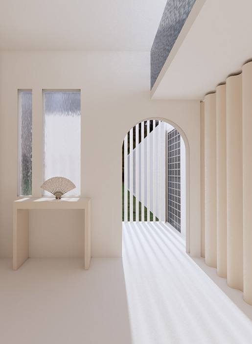
Project 02 — Abode of Simplicity
Interlude
between memory and silence · reel 01
A small object becomes
a spatial narrative
This project unfolds from an antique fan, whose pleated form and fleeting shadows inspired spatial gestures. Corridors echo its folds, casting light like fan blades across curved walls.
Curtains and thresholds dissolve into fluid transitions, reimagining boundaries. What began as a small object becomes a spatial narrative — a pause within the city, where memory and atmosphere quietly intertwine.
Corridors echo
its folds
Light falls like fan blades across curved walls. Curtains and thresholds dissolve into fluid transitions — boundaries are reimagined as pleats of light and shadow.
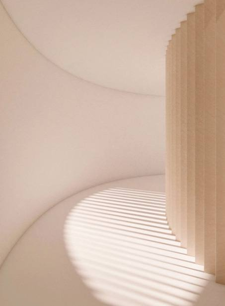
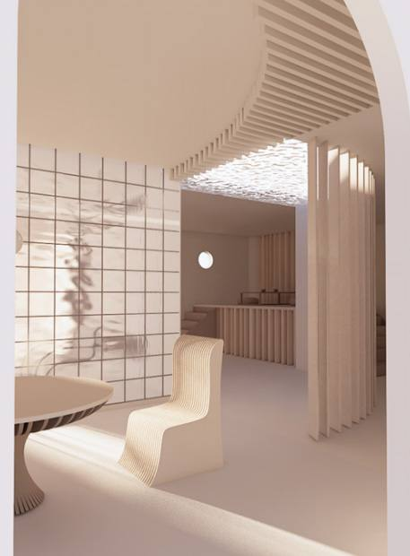
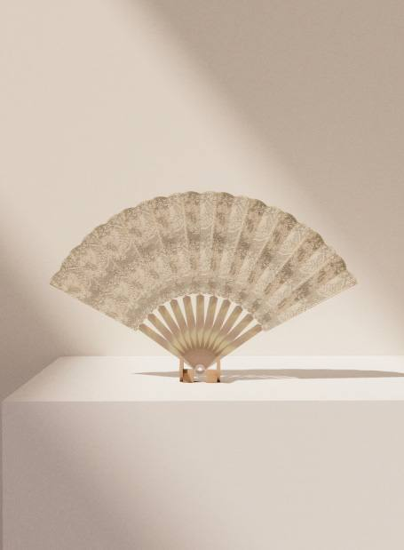
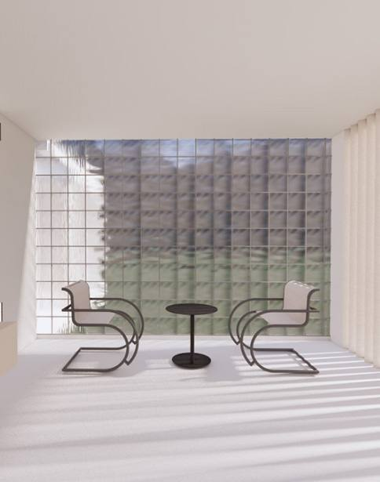
Re-collaging the interior
By re-collaging and inverting interior elements, I was able to reimagine the possibilities of spatial design — no longer a conventional interior, but a new context generated through the rotation and reassembly of the previous space.
Doors, windows, and partitions are stripped of their traditional functions and reinterpreted as mediators that redefine boundaries and fluidity. This approach became an important source of inspiration for Project 01 — Perception.
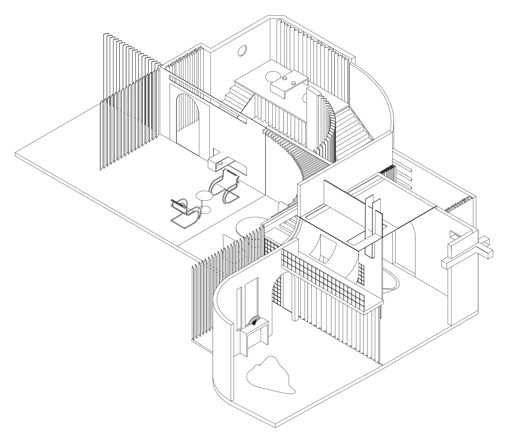
Floor plan
The plan itself reads as a folded surface — corridors pleat across the dwelling, rooms open and close like the blades of a fan.
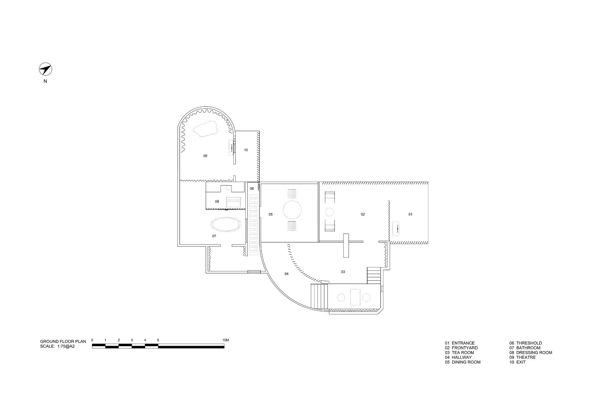
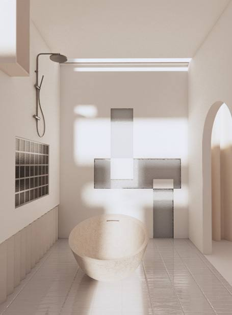
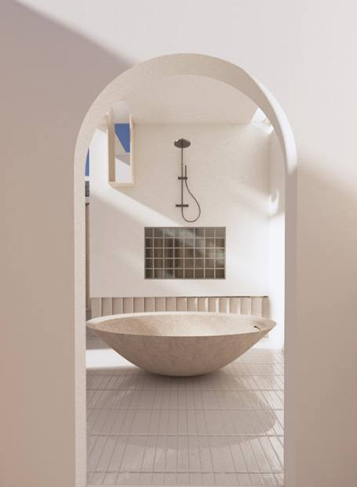
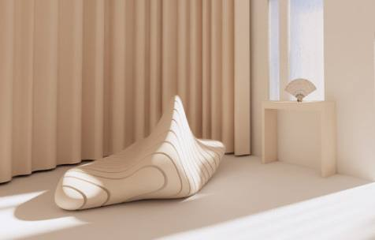
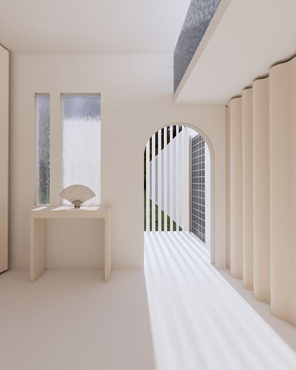